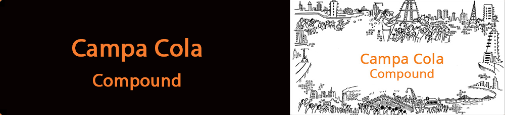

Environment
Seven buildings of the Campa Cola Compound, in Mumbai’s upmarket neighbourhood of Worli, came into the limelight in 2012 post a Supreme Court ruling that their upper floors (beyond the legitimate ground+5) should be demolished. It stated that developers had flouted FSI rules and as such almost 91,000 sq. Ft. Area that housed 115 families was to be turned to dust by Oct. 2nd, 2013.
Agency Brief
After months of fighting losing court battles and faced with a 48 hour eviction notice from the BMC, residents of over 25 years at the Compound, approached one of India’s leading Public Relations firm, Concept PR, for support.
Generate heightened media focus to carry their voice across the length and breadth of Mumbai and later the Nation and impact influencers.
Focus attention on the plight of the residents while the BMC officials and developers went scot-free.
The Action
Concept PR’s newly established Concept Community relations team given the mandate.
• Created a war room like set-up that enabled 24X7 monitoring.
• Dedicated senior resources operated as thought leaders.
• Young team put together for round the clock monitoring and to manage media across platforms- Electronic, Print, Social, Radio, Outdoor and Cinema Halls
• Relevant and impactful content had to be developed on regular basis.
• Ensure quick turnaround for all media queries.
The Challenge
Engage media and media influencers across Mumbai and the Nation
• Mobilize support from the common Mumbaikar.
• Build up and sustain the momentum of the campaign for a period of 3 months and beyond
• Train ordinary citizens to manage media engagement in an effective and impactful manner
The Approach
The idea was to approach the angle of being ‘Financially Intelligent’ differently. We decided to engage with our fans on the topic of ‘Farzu’ advice – Farzu meaning untrue or nonsensical. We had The Market’s new ad featuring Boman Irani to build on. In order to take the ‘Farzu’ concept forward, we took to Facebook and Twitter to get the buzz going and gave our fans the opportunity to have a bit of fun, all the while keeping “The Market’s” main underlying message in people’s minds – We all have friends or acquaintances who give us pointless advice. This is something that our fans across the Social Media environment, proved right by sharing all the advice they’ve received and helping spread our message.
Concept’s Online Marketing Agency arm developed a two-pronged approach for the Farzu digital campaign that was launched on Facebook – The first challenge was to define the word ‘Farzu’ itself. Did people actually know what it meant and in what context? How could we associate the word ‘Farzu’ with the everyday babblings of people who think they ‘know it all’ about finance?
Secondly, “The Market” was a new company in the, no pun intended, market. For any Digital Marketing Agency, the challenge in this is not about creating a Facebook presence but in creating a buzz by increasing the fan base as we went along with the campaign.
TWITTER:
The agency’s Online Marketing team managed to hit the ground running with the Facebook contest; some fantastic entries and creative participation. However, to increase our visibility on social media, we took to the one place where being fast and witty is the name of the game - Twitter.
THE PR PLAN
• Summon entire city media to the Compound for a first hand feel of the situation
• Plan and action impromptu press conferences by office bearers and harassed residents.
• Appeal to all authorities.
• Encourage voluntary participation of elected representatives
• Continuous feed of content/headlines to media
• Regular alerts to FM Radio Stations
• An active and engaging Social Media campaign
• Ensuring media spotlight at all critical junctures
- Residents move Supreme Court seeking more time.
- Resident Groups seeking legal remedies.
• Design content focused on emotional stories of senior citizens and school going children
• Highlighting residents’ activities from prayer meets to fasts held within the compound.
OCTOBER IMPACT
• Massive media response, across local, regional and national channels (print and electronic)
• The continuous live coverage of the demolition deadline resulted in Supreme Court giving further reprieve till Nov. 12th, 2013.
• Senior leaders from across parties, both National and Regional, became the face of the residents’ cause and added their weight behind them.
INTENSIFIED ACTION
• With the new demolition deadline closing in media coverage was intensified and content focused on
- Residents being cheated by Officials and Developers
- BMC sparing errant builders while hapless residents/home buyers suffer
- The step-motherly treatment being meted to Campa Cola Compound while illegal buildings in Thane allowed to begin cluster development.
• Top news channels run debates with all stake holders

• All party political support built to intensify pressure on CM to issue an ordinance to save residents.
• Focus on Union Minister Milind Deora’s final salvo – an SOS letter to UPA Chairperson, Mrs. Sonia Gandhi.
• Entire national media present, giving minute to minute coverage of the dramatic action on d-day as BEST cut off power supply and bull dozers positioned themselves.
• International media also begin discussions

THE SOCIAL FOOTPRINT
Focussed on generating and spreading awareness among digital audiences in Mumbai by:-• Identifying influencers and requesting them to support the cause
• Constantly trying to increase the supporter base
• Creating engagement across all the platforms present
• Keeping supporters updated about the latest developments in the case via various digital platforms
• Highlighting all important stories and ensuring they get viraled/trend
• Keeping focus of content on raising awareness about corruption and injustice and highlight it at a national level.
Platforms targeted
• Twitter – official page
• Facebook – official page and relevant groups
• YouTube – official channel
• PR Newswires
• Slide share and Scribd
• Guest Bloggers
• Relevant Forums
• Online petition via change.org
• Support via Missed Call
RESULT